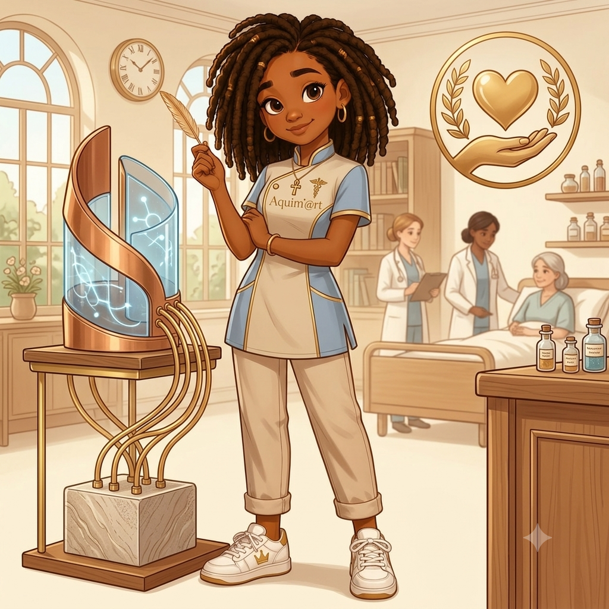
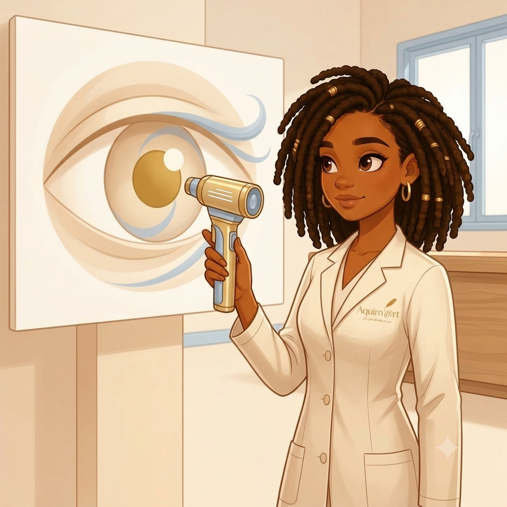

Peut-être que si on les avait laissé faire, les Noirs en auraient trop fait. C'est du moins ce que l'histoire semble suggérer. En effet, malgré les ségrégations, les préjugés et l'exploitation dont les personnes noires ont été victimes au cours des siècles, elles ont su poser leur marque dans des domaines aussi essentiels que la science. Dans son livre Inventeurs et savants noirs, Yves Antoine met en lumière plusieurs personnes noires qui ont marqué les domaines scientifiques et techniques. Ce qui rend leurs découvertes remarquables, ce n'est pas tant l'identité de ceux qui les ont faites que les circonstances dans lesquelles elles ont vu le jour : à une époque où l'on prétendait qu'ils en étaient incapables. Dans cet article, il ne s'agira pas tant de dresser une biographie, mais plutôt de parler de leurs inventions et de leur pertinence pour l'époque à laquelle elles ont été faites et/ou pour la nôtre. Voici donc une sélection de six contributions majeures.
Nouvelle méthode de conservation des aliments — Lloyd Augustus Hall (1894–1971)
Avant les travaux de Lloyd Hall, la conservation de la viande reposait sur le sel et les épices seuls, une méthode peu fiable, qui y laissait souvent un goût amer. Chimiste en chef chez Griffith Laboratories à partir de 1932, Hall s'attaque à ce problème et fait une découverte qui va à contre-courant des croyances de l'époque : contrairement à ce que l'on pensait alors, certaines épices n'aidaient pas à conserver les aliments mais les exposaient au contraire à des microbes qui accéléraient leur dégradation.
C'est dans ce contexte qu'il perfectionne le procédé du « fast-drying ». Accroche-toi, on entre dans la partie un peu technique : il mélange du chlorure de sodium avec des nitrites et nitrates de sodium, qu'il évapore rapidement pour former des cristaux combinant le pouvoir conservateur du sel à l'action curative des nitrites et nitrates (si tu as tout suivi, bravo). Le procédé de base venait d'un brevet allemand racheté par son employeur (Griffith Laboratories) ; la contribution de Hall a été d'y ajouter des agents comme le sucre de maïs et la glycérine pour régler un problème d'absorption d'humidité qui limitait l'efficacité des premiers cristaux, une amélioration décisive, brevetée, et nettement supérieure à tout ce qui existait alors. Cette méthode reste aujourd'hui la base de la salaison industrielle de la viande : bacon, jambon, charcuteries, le principe n'a essentiellement pas changé depuis.
Hall ne s'arrête pas là : il met aussi au point une méthode de stérilisation des épices par gaz sous vide, une technique que les industries alimentaire, pharmaceutique et cosmétique adopteront à leur tour et que le secteur médical utilise encore aujourd'hui pour stériliser du matériel. Au terme de sa carrière, il détient environ 105 brevets, et devient en 1955 le premier Afro-Américain à siéger au conseil d'administration de l'American Institute of Chemists.
Synthèse des phéromones d'insectes — Bertram Oliver Fraser-Reid (1934–2020)
Né en 1934 à Coleyville, en Jamaïque, Fraser-Reid étudie la chimie à l'université Queen's, puis obtient un doctorat à l'université de l'Alberta sous la direction de Raymond Lemieux, avant un postdoctorat à Imperial College London auprès du prix Nobel Derek Barton, avant de rejoindre en 1966 l'université de Waterloo, où il dirige pendant 14 ans un groupe de recherche surnommé les « Fraser-Reid's Rowdies ». Son idée directrice : synthétiser des molécules chirales complexes, dont des phéromones d'insectes, à partir de glucides plutôt que de produits pétroliers, une piste particulièrement pertinente dans le contexte des craintes de pénurie pétrolière des années 1970, alors que le pétrole restait la matière première dominante de l'industrie chimique.
Cette approche trouve une application concrète contre la tordeuse des bourgeons de l'épinette, un insecte qui ravageait alors les forêts de conifères de l'est du Canada. En reproduisant chimiquement la phéromone de cet insecte, il a permis au Service canadien des forêts de perturber son cycle d'accouplement plutôt que de recourir au DDT, un insecticide dangereux alors banni. C'est là toute la portée de la découverte : remplacer un pesticide à large spectre, toxique pour tout un écosystème, par un composé ciblant une seule espèce.
Cette logique, des phéromones synthétiques plutôt que des insecticides chimiques, est aujourd'hui un pilier des méthodes de lutte intégrée en agriculture et en foresterie à travers le monde. Fraser-Reid a poursuivi sur cette lancée à l'université Duke, où il a développé le principe dit « armed-disarmed » en chimie des sucres et orienté ses recherches vers le rôle des oligosaccharides dans la réponse immunitaire avec pour objectif, entre autres, de développer un vaccin à base de sucres contre le paludisme. Il a été nominé pour le prix Nobel de chimie en 1988, et a reçu plusieurs distinctions majeures, dont le Percy Julian Award, décerné par l'organisation pour l'avancement professionnel des chimistes noirs.
Télégraphie multiplexée — Granville T. Woods (1856–1910)
Granville T. Woods dépose en 1885 le brevet de la « telegraphony », un appareil combinant téléphone et télégraphe qui permet à une station d'envoyer voix et messages Morse sur une seule ligne. Il en vend les droits à l'American Bell Telephone Company, une vente qui lui donne les moyens de devenir inventeur à plein temps. C'est cette liberté financière qui lui permet de se consacrer à son invention la plus marquante.
En 1887, il dépose le brevet du Synchronous Multiplex Railway Telegraph, un système qui utilise l'induction électromagnétique pour permettre à des trains en mouvement de communiquer avec les gares et entre eux. Jusque-là, un train en marche était complètement injoignable, ce qui causait des accidents. Thomas Edison lui conteste le brevet à deux reprises, prétendant avoir inventé un système similaire en premier ; Woods gagne les deux procès, et Edison, plutôt que de continuer à se battre, lui propose un poste dans son entreprise. Woods refuse, préférant rester indépendant, un épisode qui lui vaut le surnom de « Black Edison » dans la presse de l'époque.
Le principe au cœur de cette invention : faire circuler plusieurs communications distinctes sur une seule ligne, est exactement celui du multiplexage, une technique qui est aujourd'hui au fondement de la quasi-totalité des télécommunications modernes : réseaux téléphoniques, câble, fibre optique, réseaux cellulaires. Woods a été intronisé à titre posthume au National Inventors Hall of Fame en 2006 pour cette contribution.
Régulateur pour stimulateur cardiaque — Otis Boykin (1920–1982)
Otis Boykin naît le 29 août 1920 à Dallas, au Texas. Un détail qui donne une résonance particulière à la suite de son parcours : sa mère meurt d'une insuffisance cardiaque alors qu'il n'a qu'un an. Major de sa promotion au lycée Booker T. Washington, il obtient une bourse pour l'université Fisk, où il étudie la physique et la chimie. Diplômé en 1941, il devient assistant de laboratoire à la Majestic Radio and Television Corporation à Chicago, où il teste des systèmes de pilotage automatique pour les avions de la Seconde Guerre mondiale, avant de fonder sa propre entreprise, Boykin-Fruth, avec son associé Hal Fruth.
C'est dans ce cadre qu'il dépose, en 1959, un brevet pour une résistance de précision à fil, un composant permettant d'assigner une valeur de résistance électrique exacte à un circuit, plus fiable et moins coûteux que ce qui existait alors. Il en développe ensuite une version capable de résister à des écarts extrêmes de température, de pression et de choc, ce qui lui vaut d'être adoptée par l'armée américaine pour les missiles guidés et par IBM pour ses ordinateurs. En 1964, il applique ce savoir-faire à un problème très différent : un régulateur qui contrôle avec précision la fréquence des impulsions électriques du pacemaker. Le résultat rend les pacemakers plus fiables, plus durables et surtout beaucoup moins chers à produire, un facteur déterminant pour rendre ce traitement accessible à un plus grand nombre de patients dans le monde.
Des versions de ses résistances sont encore utilisées aujourd'hui dans une large gamme d'appareils, des téléviseurs aux ordinateurs en passant par les smartphones, et son travail sur le régulateur de pacemaker continue d'influencer la façon dont ces dispositifs sont conçus. Otis Boykin meurt en 1982 à Chicago d'une insuffisance cardiaque, la même maladie qui avait emporté sa mère, et celle-là même qu'il avait consacré une partie de sa carrière à mieux réguler chez les autres.
Conservation par hypothermie du rein — Samuel L. Kountz (1930–1981)

Samuel Kountz naît en 1930 à Lexa, en Arkansas, en pleine ère de ségrégation. Fils aîné d'un pasteur baptiste et d'une sage-femme, il fréquente une école à classe unique réservée aux enfants noirs. Refusé une première fois à l'université faute d'avoir réussi l'examen d'entrée, il finit par intégrer l'université d'Arkansas-Pine Bluff, dont il sort troisième de sa promotion, puis obtient une maîtrise en biochimie. C'est le sénateur J. William Fulbright, qu'il rencontre à cette époque, qui l'encourage à viser la médecine, il devient l'un des premiers étudiants noirs diplômés de la faculté de médecine de l'université d'Arkansas, avant de rejoindre Stanford pour sept ans de formation chirurgicale.
C'est encore comme interne, en 1961, qu'il réalise la première greffe rénale réussie entre deux personnes qui ne sont pas de vrais jumeaux. Jusque-là, on pensait qu'une greffe ne pouvait réussir qu'entre jumeaux identiques. Cette percée ouvre la voie aux greffes entre proches non identiques génétiquement, puis, plus tard, entre donneurs non apparentés. En 1967, devenu responsable du service de transplantation rénale à l'université de Californie à San Francisco, il travaille avec le Dr Folkert Belzer pour mettre au point ce qui deviendra la machine de perfusion rénale Belzer, un appareil capable de conserver un rein prélevé pendant plus de cinquante heures, contre seulement quelques heures auparavant.
Cette fenêtre de temps change tout : elle donne aux équipes médicales la marge nécessaire pour trouver le bon receveur, transporter l'organe et préparer l'intervention, plutôt que de courir contre la montre. La machine devient rapidement un équipement standard dans les hôpitaux et laboratoires du monde entier (elle l'est encore aujourd'hui). Kountz mène aussi des recherches en typage tissulaire qui élargissent le bassin de donneurs compatibles au-delà de la famille proche, réalise environ 500 greffes rénales au cours de sa carrière, plus qu'aucun autre chirurgien à l'époque et milite activement pour le don d'organes, allant jusqu'à réaliser une greffe en direct à la télévision, un geste qui aurait poussé environ 20 000 téléspectateurs à envisager de donner un rein. Il meurt en 1981, à 51 ans, des suites d'une maladie contractée lors d'un voyage professionnel en Afrique du Sud, qui avait gravement endommagé son cerveau quelques années plus tôt.
Laserphaco Probe — Patricia Bath (1942–2019)

Patricia Bath naît en 1942 à Harlem, à New York. Dès 16 ans, elle décroche une bourse de la National Science Foundation pour mener des recherches en laboratoire à l'université Yeshiva. Après des études à Hunter College puis un doctorat en médecine à Howard University, elle devient en 1973 la première Afro-Américaine à achever une résidence en ophtalmologie, à Columbia. C'est en observant que la cécité évitable touchait de façon disproportionnée les patients noirs qu'elle développe un nouveau champ, l'« ophtalmologie communautaire », consacré à l'accès aux soins oculaires pour les populations les moins desservies, une préoccupation qui la pousse, en 1976, à cofonder l'American Institute for the Prevention of Blindness. En 1983, elle devient la première femme à diriger un programme de résidence en ophtalmologie aux États-Unis, à Drew-UCLA.
Elle commence ses recherches sur le Laserphaco en 1981, un travail qui l'amène à passer du temps dans des laboratoires à Paris puis à Berlin pour étudier l'usage des lasers en chirurgie oculaire, y compris de premières expérimentations avec des yeux de banque de tissus. Le dispositif est achevé en 1986 : elle invente le terme « Laserphaco » (pour laser photoablative cataract surgery) pour désigner une méthode combinant fragmentation au laser et aspiration ultrasonique de la cataracte, réalisable par une incision d'à peine un millimètre, sans suture, nettement moins invasive, plus précise et moins douloureuse que les techniques existantes. Certains patients aveugles depuis des décennies retrouvent la vue grâce à cette méthode. En 1988, elle reçoit le brevet du Laserphaco Probe, devenant la première femme médecin afro-américaine à obtenir un brevet médical aux États-Unis.
Sa technique est aujourd'hui utilisée dans le monde entier, et les instruments modernes de chirurgie de la cataracte assistée par laser descendent directement de son travail, une continuité d'autant plus frappante que la chirurgie de la cataracte est désormais l'opération chirurgicale la plus pratiquée au monde, toutes spécialités confondues. Bath détient au total cinq brevets américains, dont trois liés au Laserphaco. Elle prend sa retraite de UCLA Medical Center en 1993, meurt en 2019, et est intronisée à titre posthume au National Inventors Hall of Fame en 2022.
Ces six innovations ne représentent qu'une fraction des contributions scientifiques et techniques apportées par des personnes noires à travers l'histoire. Je pencherais même pour dire que le nombre de découvertes et d'inventions faites par les Noirs est inestimable, car aucune société ne survit si elle n'évolue pas, si elle ne s'adapte pas, si elle n'a pas parmi les siens des gens qui cherchent, qui bricolent, qui inventent. Néanmoins, mettre en lumière ces contributions nous aide à nous rappeler que le génie n'a jamais été affaire de couleur ou de sexe, mais surtout de bon sens et peut-être d'un peu de passion. Alors à toi qui vises l'excellence, voici quelques preuves, parmi tant d'autres, que tu en es capable.
À lire aussi
Source
Antoine, Yves. Inventeurs et savants noirs. L'Harmattan.